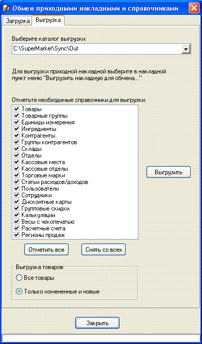
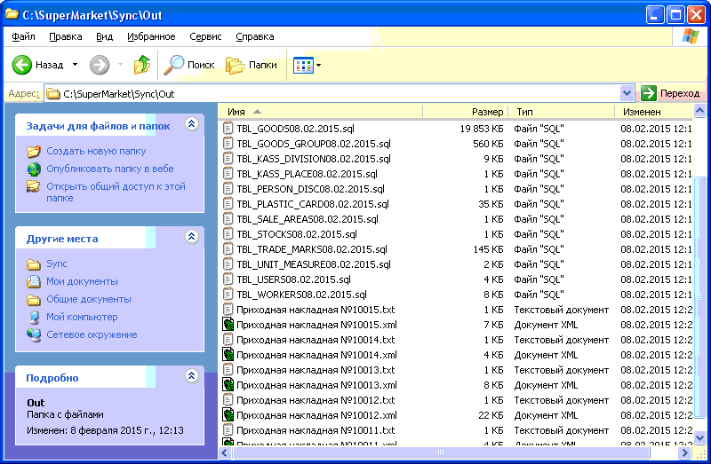
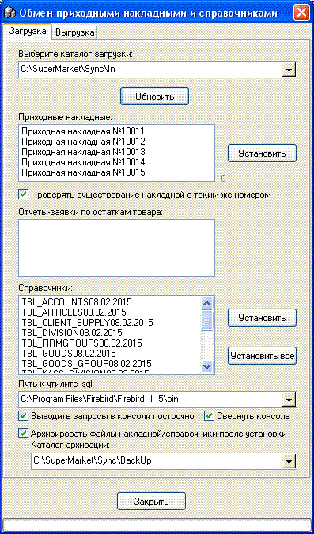

Данная возможность доступна только
администраторам (если иное не указано в настройках программы, однако другим
ролям пользователей нельзя изменять настройки выгрузки/загрузки).
При помощи данной возможности на главной точке
можно выгрузить справочники (а при помощи аналогичной возможности пиходных
накладных можно выгрузить приходные накладные) и передав их на подчиненную
точку (оформленную как отдельный склад главной точки) избежать ручного
ввода накладных на этой торговой точке. Посколько, в отличии от полноценной
репликации, на главную точку не передается реализация с подчиненной точки, то
остатки данного склада на главной точке списываются переучетом.
Более подробную информацию смотрите в разделах
справки "Настройки - вкладка Репликация/Синхронизация" и "Приходная накладная
- Выгрузка накладной для обмена", а в данном разделе рассмотрим свойства
данной формы, которая состоит из двух вкладок: "Загрузка" и
"Выгрузка".
Вкладка "Выгрузка".

При нажатии кнопки "Выгрузить" отмеченные
товарные справочники в виде скриптов SQL будут выгружены в файлы (по одному на
каждый справочник) в указанный вверху формы каталог выгрузки (например, такой
как указан на рисунке выше).
Опция "Выгрузка товаров":
Все товары - выгружает все товары
справочника, обычно используется при первичном наполнении удаленной пустой
базы.
Только измененные и новые -
выгружает только такие элементы справочника товаров, что существенно сокращает
размер скрипта и время выгрузки/загрузки
справочника товаров (особенно актуально на больших базах данных, там где количество товаров 50-100 тысяч
наименований товара).
Вид выгруженных файлов в каталоге
выгрузки:
Далее эти файлы переносят на нужную удаленную
точку в каталог для загрузки.
Вкладка "Загрузка".

С помощью данной вкладки на подчиненном магазине
производится загрузка приходных накладных и справочников из указанного вверху
формы каталога загрузки (например, такого как указан на рисунке
выше).
Кнопка "Обновить" обновляет данные с
указанного каталога.Вначале необходимо
установить справочники, а затем накладные. Если попробовать сделать наоборот,
то будет выдано соответствующее предупреждение. Обычно нажимают "Установить все".
"Путь к утилите isql" - укажите путь к каталогу
bin установленного Firebird SQL Server на данном компьютере.
Смысл опций работы с появляющейся консолью isql
для выполнения скриптов справочников, понятны их их названий.
"Архивировать файлы накладной/справочники после
установки" "Каталог архивации" - укажите путь куда будут перемещены файлы
после их вставки в базу данных (например, такой как указан на рисунке
выше).
Приходные накладные вставляются по одной - при
этом они открываются на экране, чтобы пользователь видел, что он сохраняет в
базу данных.
Опция "Проверять существование накладной с таким
же номером" - очень желательно, чтобы была установлена, для предотвращения
вставки одной накладной несколько раз.